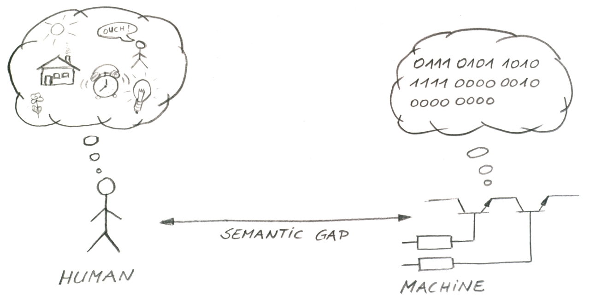
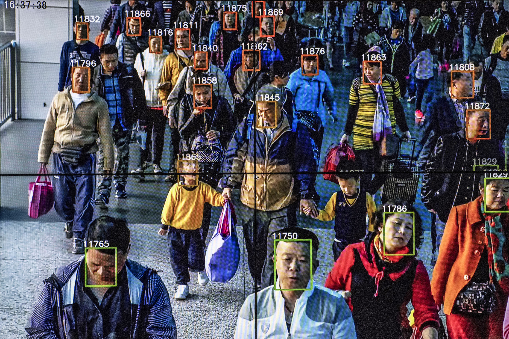
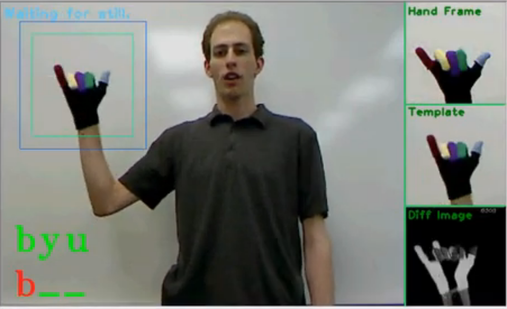
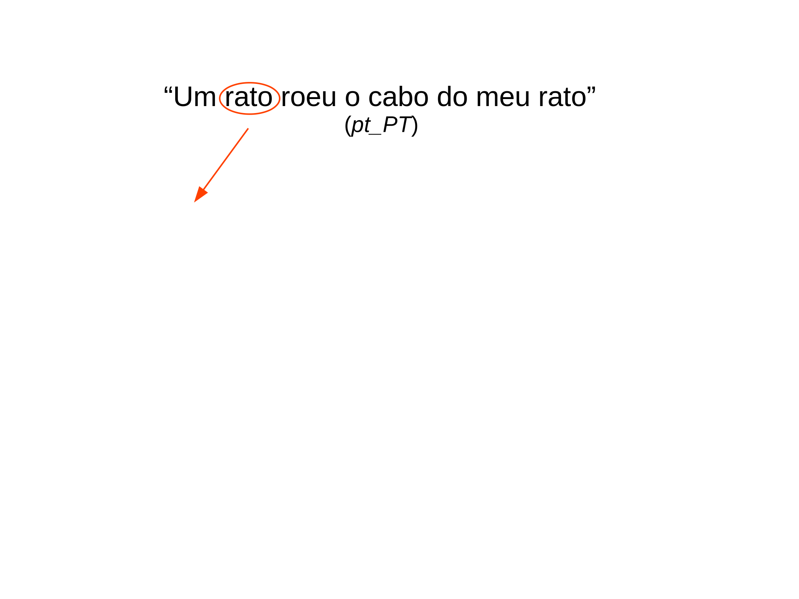
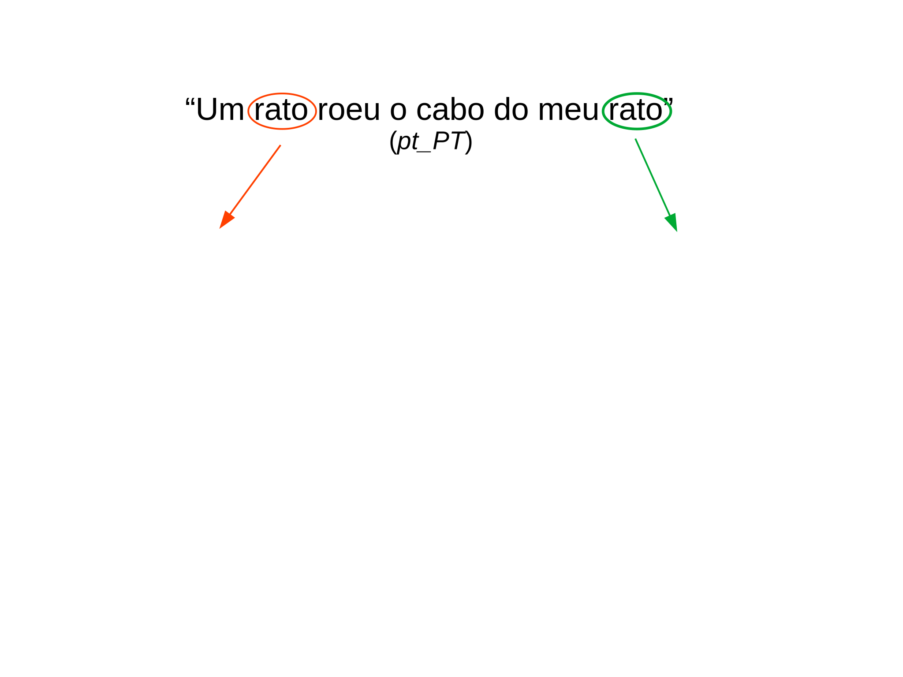
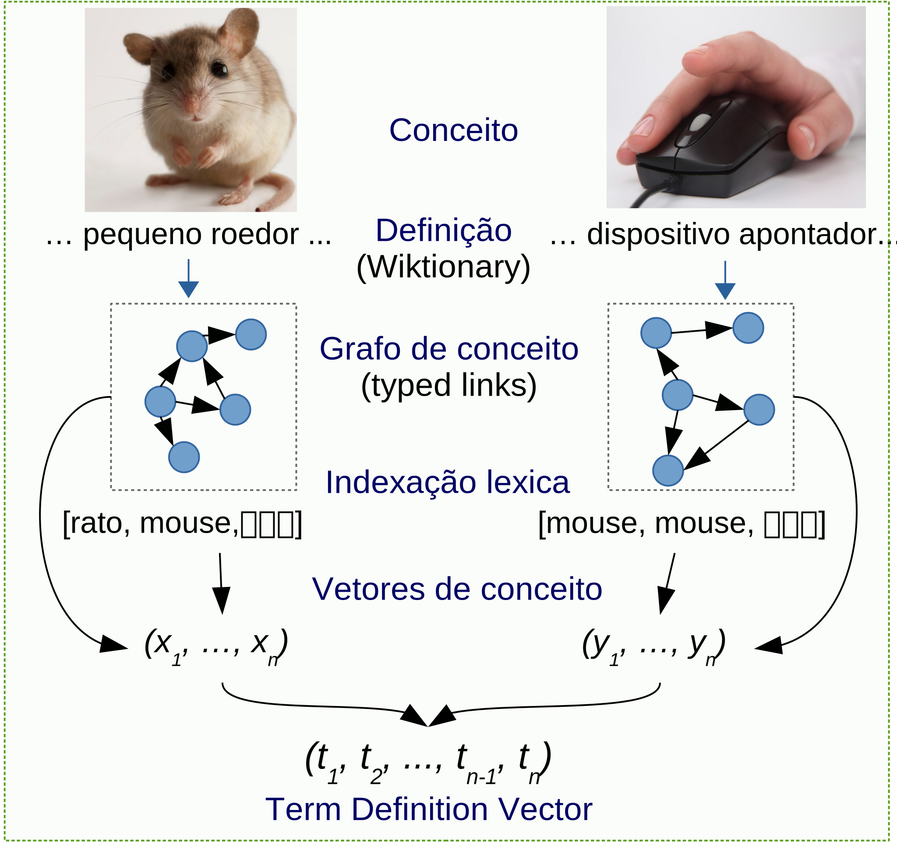
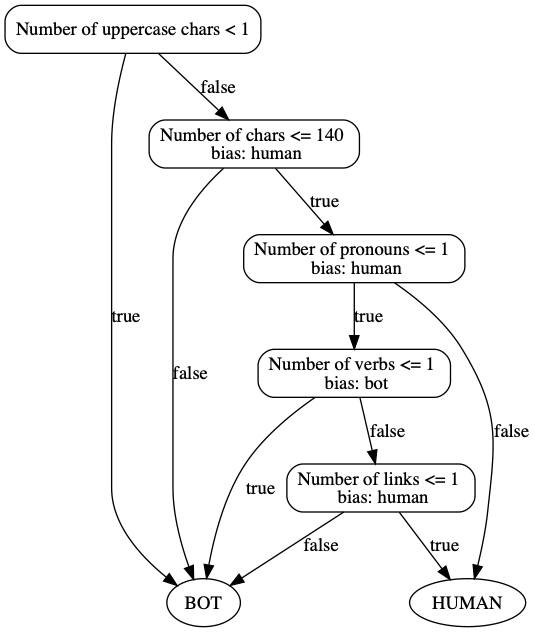
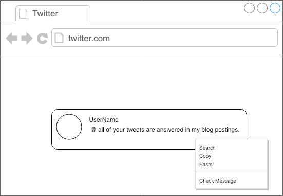
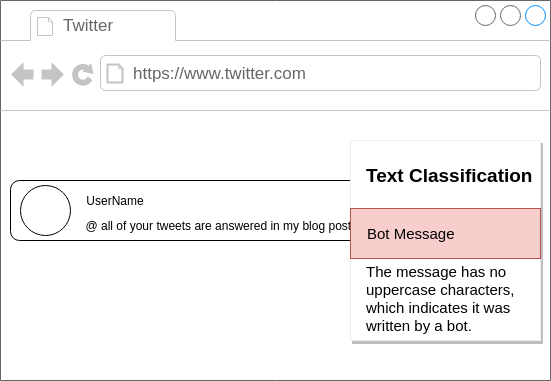
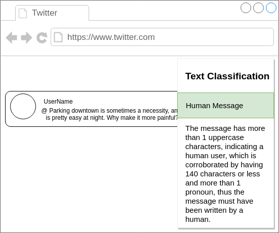

Algumas ideias para Projeto Final
Ciência da Computação
Prof.: Danilo S. Carvalho
Aprendizado de Máquina aplicado à PLN
  
Aprendizado de Máquina aplicado à PLN
 
Modelos de Representação de Linguagem

Análise de Redes Sociais e Letramento em Mídias Digitais
Análise de Redes Sociais e Letramento em Mídias Digitais
   
Contato
danilosc@dcc.ufrj.br